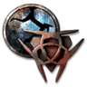
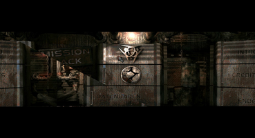
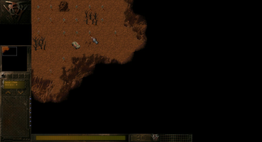

Earth 2140
Dieser Artikel wurde für die folgenden Ubuntu-Versionen getestet:
Ubuntu 14.04 Trusty Tahr
Zum Verständnis dieses Artikels sind folgende Seiten hilfreich:

Earth 2140 
 ist der erste Teil der Earth-Reihe. Kriege und Umweltkatastrophen zwingen die Bevölkerung der verfeindeten Staaten United Civilized States (UCS) und der Eurasian Dynasty (ED) in unterirdische Städte. Die Ressourcen werden knapp, weite Teile der Erdoberfläche wurden durch Atomkriege verseucht und die letzten Vorkommen müssen auf der Erdoberfläche gefördert werden. Ein weiterer Weltkrieg bahnt sich an, da eine Expansion nur auf gegnerisches erritorium möglich ist. Die richtige Strategie in diesem High-Tech-Krieg entscheidet über Sieg oder Niederlage. Es gilt 120 Missionen zu bewältigen.
ist der erste Teil der Earth-Reihe. Kriege und Umweltkatastrophen zwingen die Bevölkerung der verfeindeten Staaten United Civilized States (UCS) und der Eurasian Dynasty (ED) in unterirdische Städte. Die Ressourcen werden knapp, weite Teile der Erdoberfläche wurden durch Atomkriege verseucht und die letzten Vorkommen müssen auf der Erdoberfläche gefördert werden. Ein weiterer Weltkrieg bahnt sich an, da eine Expansion nur auf gegnerisches erritorium möglich ist. Die richtige Strategie in diesem High-Tech-Krieg entscheidet über Sieg oder Niederlage. Es gilt 120 Missionen zu bewältigen.
Dem Spieler stehen mehr als 100 Einheiten, Roboter, Panzer und Schiffe zur Verfügung. Die beiden Erweiterungen Mission Pack 1 und Mission Pack 2 - Final Conflict sind im Spiel enthalten.
|  |  |
| Menü | Spielszene |
Installation¶
Desura¶
Das Spiel kann über die Internetseite oder den Client zur Spieleliste hinzugefügt und gestartet werden [1].
Problemlösungen¶
 mit
mit Tastenkürzel¶
| Tastenkürzel | |
| Taste(n) | Funktion |
 | Scrollen der Spielfläche. |
|
Strg + | Spielfläche zum Bildschirmrand hin verschieben. |
| 0 - 9 | Aktivierung des jeweiligen Teams. |
| X | Einheiten zerstreuen |
| R | Unterstützung anfordern (Reinforcements) |
| P | Pause |
| F1 | Bildschirmfoto aufnehmen - es wird im Unterverzeichnis SHOTS abgelegt. |
| F2 / F3 | Spielstand speichern / laden |
| O | Beschreibung der Einheiten (de)aktivieren |
| E | Eskorte |
| A | Angriff |
| G | Bewachen |
| Alt | Eine Einheit aus der gewählten Gruppe entfernen. |
| Alt + 1 | Gebäudesteuerung |
| Alt + 2 | Einheitensteuerung |
| Alt + 3 | Strategiesteuerung |
| Alt + 4 | Spielsteuerung |
| Esc | Verlassen |

- Erstellt mit Inyoka
-
 2004 – 2017 ubuntuusers.de • Einige Rechte vorbehalten
2004 – 2017 ubuntuusers.de • Einige Rechte vorbehalten
Lizenz • Kontakt • Datenschutz • Impressum • Serverstatus -
Serverhousing gespendet von